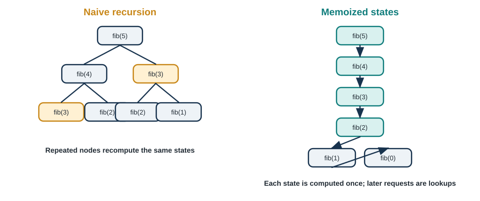

5 Dynamic Programming - When Subproblems Overlap
“Those who cannot remember the past are condemned to repeat it.” - George Santayana (and also, apparently, algorithms)
Welcome to the World of Memoization
Imagine you’re climbing a staircase with 100 steps, and you can take either 1 or 2 steps at a time. How many different ways can you reach the top? If you tried to solve this with the divide and conquer techniques from Chapter 2, you’d find yourself computing the same subproblems over and over again—millions of times! Your computer would still be calculating when the sun burns out.
But what if you could remember the answers to subproblems you’ve already solved? What if, instead of recomputing “how many ways to reach step 50” a million times, you computed it once and wrote it down? This simple idea—remembering solutions to avoid redundant work—is the heart of dynamic programming, and it transforms problems from impossible to instant.
Dynamic programming (DP) is like divide and conquer’s clever sibling. Both break problems into smaller subproblems, but there’s a crucial difference:
Divide and Conquer: Subproblems are independent (solving one doesn’t help with others) Dynamic Programming: Subproblems overlap (the same subproblems appear repeatedly)
This overlap is the key. When subproblems repeat, we can solve each one just once, store the solution, and look it up whenever needed. The result? Algorithms that would take exponential time can suddenly run in polynomial time—the difference between “impossible” and “instant.”
Why This Matters
Dynamic programming isn’t just an academic exercise. It’s the secret sauce behind some of the most important algorithms in computing:
🧬 Bioinformatics: DNA sequence alignment uses DP to compare genetic codes, enabling personalized medicine and evolutionary biology research.
📝 Text Editors: The “diff” tool that shows differences between files? Dynamic programming. Version control systems like Git use it constantly.
🗣️ Speech Recognition: Converting audio to text involves DP algorithms that find the most likely word sequence.
💰 Finance: Portfolio optimization, option pricing, and risk management all use dynamic programming.
🎮 Game AI: Optimal strategy calculation in games from chess to poker relies on DP techniques.
📱 Autocorrect: When your phone suggests word corrections, it’s using edit distance—a classic DP algorithm.
🚗 GPS Navigation: Finding shortest paths in maps with traffic patterns uses DP principles.
What You’ll Learn
This chapter will transform how you think about problem solving. You’ll master:
- Recognizing DP Problems: The telltale signs that a problem is crying out for dynamic programming
- The DP Design Pattern: A systematic approach to developing DP solutions
- Memoization vs Tabulation: Two complementary strategies for implementing DP
- Classic DP Problems: From Fibonacci to knapsack to sequence alignment
- Optimization Techniques: Space-saving tricks and advanced DP patterns
- Real-World Applications: How DP solves practical problems across domains
Most importantly, you’ll develop DP intuition—the ability to spot overlapping subproblems and design efficient solutions. This intuition is a superpower that will serve you throughout your career.
Chapter Roadmap
We’ll build your understanding step by step:
- Section 5.1: Introduces DP through the Fibonacci sequence, showing why naive recursion fails and how memoization saves the day
- Section 5.2: Develops the systematic DP design process with the classic knapsack problem
- Section 5.3: Explores sequence alignment problems (LCS, edit distance) critical for bioinformatics
- Section 5.4: Tackles matrix chain multiplication and optimal substructure
- Section 5.5: Shows space optimization techniques and advanced patterns
- Section 5.6: Connects DP to real-world applications and implementation strategies
Unlike recursion in Chapter 2, which many students find challenging initially, DP often feels even MORE difficult at first. That’s completely normal! DP requires seeing problems from a new angle—thinking about optimal substructure and overlapping subproblems simultaneously. We’ll take it slowly, with plenty of examples and visualizations.
By the end of this chapter, you’ll look at recursive problems differently. You’ll ask: “Do subproblems overlap? Can I reuse solutions? What should I memoize?” These questions will unlock solutions to problems that initially seem impossible.
Let’s begin by understanding why we need dynamic programming at all!
5.1 The Problem with Naive Recursion
5.1.1 Fibonacci: A Cautionary Tale
Let’s start with one of the most famous sequences in mathematics: the Fibonacci numbers.
Definition:
F(0) = 0
F(1) = 1
F(n) = F(n-1) + F(n-2) for n ≥ 2
Sequence: 0, 1, 1, 2, 3, 5, 8, 13, 21, 34, 55, 89, 144...This recursive definition seems perfect for a recursive implementation:
def fibonacci_naive(n):
"""
Compute the nth Fibonacci number using naive recursion.
Time Complexity: O(2^n) - EXPONENTIAL! 💀
Space Complexity: O(n) for recursion stack
Args:
n: Index in Fibonacci sequence
Returns:
The nth Fibonacci number
Example:
>>> fibonacci_naive(6)
8
"""
# Base cases
if n <= 1:
return n
# Recursive case
return fibonacci_naive(n - 1) + fibonacci_naive(n - 2)This looks elegant! The code mirrors the mathematical definition perfectly. But let’s see what happens when we run it:
print(fibonacci_naive(5)) # Returns: 5 (instant)
print(fibonacci_naive(10)) # Returns: 55 (instant)
print(fibonacci_naive(20)) # Returns: 6765 (instant)
print(fibonacci_naive(30)) # Returns: 832040 (takes ~1 second)
print(fibonacci_naive(40)) # Returns: ??? (takes ~1 minute!)
print(fibonacci_naive(50)) # Returns: ??? (would take hours!)
print(fibonacci_naive(100)) # Returns: ??? (would take millennia!)What’s going wrong? Let’s visualize the recursion tree for fibonacci_naive(5):

The problem: We compute the same values repeatedly:
fib(3)is computed 2 timesfib(2)is computed 3 timesfib(1)is computed 5 timesfib(0)is computed 3 times
For larger n, this duplication explodes exponentially!
5.1.2 Counting the Catastrophe
Let’s analyze exactly how bad this is:
Recurrence for number of calls:
C(n) = C(n-1) + C(n-2) + 1
where:
- C(n-1) + C(n-2) = recursive calls
- +1 = current callSolution: This is approximately O(φ^n) where φ ≈ 1.618 (the golden ratio)
More practically, it’s O(2^n)—exponential growth!
Impact:
| n | Function Calls | Approximate Time (1M calls/sec) |
|---|---|---|
| 10 | 177 | < 1 millisecond |
| 20 | 21,891 | ~0.02 seconds |
| 30 | 2,692,537 | ~2.7 seconds |
| 40 | 331,160,281 | ~5.5 minutes |
| 50 | 40,730,022,147 | ~11 hours |
| 100 | ~1.77 × 10²¹ | ~56 million years! |
To compute fib(100), we’d make more function calls than there are grains of sand on Earth!
5.1.3 Enter Dynamic Programming: Memoization
The solution is beautifully simple: remember what we’ve already computed.
def fibonacci_memoized(n, memo=None):
"""
Compute nth Fibonacci number using memoization.
Time Complexity: O(n) - each value computed once! 🎉
Space Complexity: O(n) for memo dictionary + recursion stack
Args:
n: Index in Fibonacci sequence
memo: Dictionary storing computed values
Returns:
The nth Fibonacci number
"""
# Initialize memo on first call
if memo is None:
memo = {}
# Base cases
if n <= 1:
return n
# Check if already computed
if n in memo:
return memo[n]
# Compute and store result
memo[n] = fibonacci_memoized(n - 1, memo) + fibonacci_memoized(n - 2, memo)
return memo[n]What changed?
- Added a
memodictionary to store computed values - Before computing
fib(n), we check if it’s inmemo - After computing
fib(n), we store it inmemo
Performance:
print(fibonacci_memoized(10)) # 55 (instant)
print(fibonacci_memoized(50)) # ~ (instant!)
print(fibonacci_memoized(100)) # ~ (instant!)
print(fibonacci_memoized(500)) # ~ (instant!)The memoized recursion tree for fib(5):
As Figure 5.1 shows, the memoized evaluation computes six unique states for fib(5); subsequent requests for a stored state are constant-time lookups.
Analysis:
- Each Fibonacci number from 0 to n is computed exactly once
- All subsequent needs are satisfied by lookup
- Total time: O(n) instead of O(2^n)
- Speedup for n=50: From 11 hours to microseconds!
5.1.4 The Two Fundamental Properties
This example reveals the two key properties that make a problem suitable for dynamic programming:
1. Optimal Substructure The optimal solution to a problem can be constructed from optimal solutions to its subproblems.
For Fibonacci:
fib(n) = fib(n-1) + fib(n-2)
The solution to fib(n) is built from solutions to smaller subproblems.2. Overlapping Subproblems The same subproblems are solved multiple times in a naive recursive approach.
For Fibonacci:
Computing fib(5) requires:
- fib(3) computed 2 times
- fib(2) computed 3 times
- fib(1) computed 5 times
These are overlapping subproblems!Key insight: Divide and conquer (from Chapter 2) also has optimal substructure, but its subproblems are independent—they don’t overlap. In merge sort, we never sort the same subarray twice. That’s why divide and conquer doesn’t need memoization, but dynamic programming does!
5.1.5 Tabulation: The Bottom-Up Alternative
Memoization is top-down: we start with the big problem and recurse, storing results as we go. There’s an alternative approach called tabulation that’s bottom-up: we start with the smallest subproblems and build up.
def fibonacci_tabulation(n):
"""
Compute nth Fibonacci number using tabulation (bottom-up DP).
Time Complexity: O(n)
Space Complexity: O(n) for table
Advantages over memoization:
- No recursion (no stack overflow risk)
- Often faster in practice (no function call overhead)
- Easier to optimize space (see below)
Args:
n: Index in Fibonacci sequence
Returns:
The nth Fibonacci number
"""
# Handle base cases
if n <= 1:
return n
# Create table to store results
dp = [0] * (n + 1)
# Base cases
dp[0] = 0
dp[1] = 1
# Fill table bottom-up
for i in range(2, n + 1):
dp[i] = dp[i - 1] + dp[i - 2]
return dp[n]How it works:
n = 6
Step 0: dp = [0, 1, 0, 0, 0, 0, 0] (base cases)
Step 1: dp = [0, 1, 1, 0, 0, 0, 0] (dp[2] = dp[1] + dp[0])
Step 2: dp = [0, 1, 1, 2, 0, 0, 0] (dp[3] = dp[2] + dp[1])
Step 3: dp = [0, 1, 1, 2, 3, 0, 0] (dp[4] = dp[3] + dp[2])
Step 4: dp = [0, 1, 1, 2, 3, 5, 0] (dp[5] = dp[4] + dp[3])
Step 5: dp = [0, 1, 1, 2, 3, 5, 8] (dp[6] = dp[5] + dp[4])
Answer: dp[6] = 8 ✓Advantages of tabulation:
- No recursion overhead or stack overflow risk
- All subproblems solved in predictable order
- Often easier to optimize for space (next section)
- Can be faster in practice (no function calls)
Advantages of memoization:
- More intuitive (follows recursive definition)
- Only computes needed subproblems
- Sometimes easier to code initially
- Better for sparse problems (where many subproblems aren’t needed)
5.1.6 Space Optimization: Using Only What You Need
Notice that to compute fib(n), we only need the previous two values! We don’t need to store all n values:
def fibonacci_optimized(n):
"""
Compute nth Fibonacci number with O(1) space.
Time Complexity: O(n)
Space Complexity: O(1) - only store last two values!
This is as efficient as possible for computing Fibonacci.
"""
if n <= 1:
return n
# Only keep track of last two values
prev2 = 0 # fib(i-2)
prev1 = 1 # fib(i-1)
for i in range(2, n + 1):
current = prev1 + prev2
prev2 = prev1
prev1 = current
return prev1Space complexity: O(1) instead of O(n)!
This optimization pattern appears frequently in DP problems.
5.1.7 Comparing All Approaches
Let’s summarize what we’ve learned:
| Approach | Time | Space | Pros | Cons |
|---|---|---|---|---|
| Naive Recursion | O(2^n) | O(n) | Simple, matches definition | Exponentially slow |
| Memoization (Top-Down) | O(n) | O(n) | Intuitive, only computes needed | Recursion overhead |
| Tabulation (Bottom-Up) | O(n) | O(n) | No recursion, predictable | Less intuitive initially |
| Space-Optimized | O(n) | O(1) | Minimal memory | Only works for some problems |
5.1.8 Key Insights for DP Design
From the Fibonacci example, we learn the DP design pattern:
Step 1: Identify the recursive structure
- What’s the base case?
- How do larger problems decompose into smaller ones?
Step 2: Check for overlapping subproblems
- Draw the recursion tree
- Do the same subproblems appear multiple times?
Step 3: Decide on state representation
- What do we need to memoize?
- For Fibonacci: just the index n
Step 4: Choose top-down or bottom-up
- Memoization: Start from problem, recurse with caching
- Tabulation: Start from base cases, build up
Step 5: Implement and optimize
- Get it working first
- Then optimize space if possible
Let’s apply this pattern to more complex problems!
5.2 The Dynamic Programming Design Process
5.2.1 A Systematic Approach to DP Problems
Now that we understand the core idea, let’s develop a systematic process for tackling DP problems. We’ll use the classic 0/1 Knapsack Problem as our running example.
The 0/1 Knapsack Problem:
You’re a thief robbing a store. You have a knapsack that can carry a maximum weight W. The store has n items, each with:
- A weight: w[i]
- A value: v[i]
You can either take an item (1) or leave it (0), hence “0/1” knapsack. You cannot take fractional items or take the same item multiple times.
Goal: Maximize the total value of items you steal without exceeding weight capacity W.
Example:
Capacity W = 7
Items:
Item 1: weight=1, value=1 ($1/lb)
Item 2: weight=3, value=4 ($1.33/lb)
Item 3: weight=4, value=5 ($1.25/lb)
Item 4: weight=5, value=7 ($1.40/lb)
What's the maximum value we can carry?Greedy approach fails! You might think: “Take items with best value-to-weight ratio first.” But that doesn’t always work:
Greedy by ratio: Item 4 ($1.40/lb) + Item 1 ($1/lb)
= weight 6, value 8
Optimal solution: Item 2 + Item 3
= weight 7, value 9 ✓This is an optimization problem perfect for dynamic programming!
5.2.2 Step 1: Characterize the Structure of Optimal Solutions
Key question: For the optimal solution, what decision do we make about the last item (item n)?
Two possibilities:
- Item n is in the optimal solution:
- We get value v[n]
- We use weight w[n]
- We need optimal solution for remaining capacity (W - w[n]) using items 1…n-1
- Item n is NOT in the optimal solution:
- We get value 0 from item n
- We use weight 0 from item n
- We need optimal solution for full capacity W using items 1…n-1
Recursive formulation:
Let K(i, w) = maximum value using items 1...i with capacity w
Base cases:
K(0, w) = 0 (no items, no value)
K(i, 0) = 0 (no capacity, no value)
Recursive case:
K(i, w) = max(
K(i-1, w), // Don't take item i
K(i-1, w - w[i]) + v[i] // Take item i (if it fits)
)
Final answer: K(n, W)This is optimal substructure: the optimal solution contains optimal solutions to subproblems!
5.2.3 Step 2: Define the Recurrence Relation Precisely
Let’s formalize our recurrence:
K(i, w) = maximum value achievable using first i items with capacity w
Base cases:
- K(0, w) = 0 for all w ≥ 0 (no items → no value)
- K(i, 0) = 0 for all i ≥ 0 (no capacity → no value)
Recursive case (for i > 0, w > 0):
If w[i] > w:
K(i, w) = K(i-1, w) // Item too heavy, can't take it
Else:
K(i, w) = max(
K(i-1, w), // Don't take item i
K(i-1, w - w[i]) + v[i] // Take item i
)5.2.4 Step 3: Identify Overlapping Subproblems
Let’s trace through a small example to see the overlap:
Items: [(w=2,v=3), (w=3,v=4), (w=4,v=5)]
Capacity W = 5
Computing K(3, 5):
Needs: K(2, 5) and K(2, 1)
K(2, 5) needs: K(1, 5) and K(1, 2)
K(2, 1) needs: K(1, 1) and K(1, -2) [invalid]
K(1, 5) needs: K(0, 5) and K(0, 3) [base cases]
K(1, 2) needs: K(0, 2) and K(0, 0) [base cases]
K(1, 1) needs: K(0, 1) [base case]
Notice: We need K(0, ...) for multiple different capacities
These are overlapping subproblems!Without memoization, we’d recompute the same K(i, w) values many times.
5.2.5 Step 4: Implement Bottom-Up (Tabulation)
For knapsack, tabulation is usually clearer than memoization. We’ll build a 2D table:
def knapsack_01(weights, values, capacity):
"""
Solve 0/1 knapsack problem using dynamic programming.
Time Complexity: O(n * W) where n = number of items, W = capacity
Space Complexity: O(n * W) for DP table
Args:
weights: List of item weights
values: List of item values
capacity: Maximum weight capacity
Returns:
Maximum value achievable
Example:
>>> weights = [1, 3, 4, 5]
>>> values = [1, 4, 5, 7]
>>> knapsack_01(weights, values, 7)
9
"""
n = len(weights)
# Create DP table: dp[i][w] = max value using items 0..i-1 with capacity w
# Add 1 to dimensions for base cases (0 items, 0 capacity)
dp = [[0 for _ in range(capacity + 1)] for _ in range(n + 1)]
# Fill table bottom-up
for i in range(1, n + 1):
for w in range(1, capacity + 1):
# Current item index (0-indexed)
item_idx = i - 1
if weights[item_idx] > w:
# Item too heavy, can't include it
dp[i][w] = dp[i-1][w]
else:
# Max of: (don't take) vs (take item)
dp[i][w] = max(
dp[i-1][w], # Don't take
dp[i-1][w - weights[item_idx]] + values[item_idx] # Take
)
return dp[n][capacity]Let’s trace through our example:
Items: w=[1,3,4,5], v=[1,4,5,7], W=7
DP Table (dp[i][w] for items 0..i-1, capacity w):
w: 0 1 2 3 4 5 6 7
i=0: 0 0 0 0 0 0 0 0 (no items)
i=1: 0 1 1 1 1 1 1 1 (item 0: w=1,v=1)
i=2: 0 1 1 4 5 5 5 5 (items 0-1: add w=3,v=4)
i=3: 0 1 1 4 5 6 6 9 (items 0-2: add w=4,v=5)
i=4: 0 1 1 4 5 7 8 9 (items 0-3: add w=5,v=7)
Answer: dp[4][7] = 9How to read the table:
dp[2][5] = 5: Using first 2 items with capacity 5, max value is 5dp[3][7] = 9: Using first 3 items with capacity 7, max value is 9 (items 1 and 2)dp[4][7] = 9: Using all 4 items with capacity 7, max value is still 9
5.2.6 Step 5: Extract the Solution (Which Items to Take)
The DP table tells us the maximum value, but which items should we actually take?
We can backtrack through the table:
def knapsack_with_items(weights, values, capacity):
"""
Solve 0/1 knapsack and return both max value and items to take.
Returns:
(max_value, selected_items) where selected_items is list of indices
"""
n = len(weights)
dp = [[0 for _ in range(capacity + 1)] for _ in range(n + 1)]
# Fill DP table (same as before)
for i in range(1, n + 1):
for w in range(1, capacity + 1):
item_idx = i - 1
if weights[item_idx] > w:
dp[i][w] = dp[i-1][w]
else:
dp[i][w] = max(
dp[i-1][w],
dp[i-1][w - weights[item_idx]] + values[item_idx]
)
# Backtrack to find which items were taken
selected = []
i = n
w = capacity
while i > 0 and w > 0:
# If value came from including item i-1
if dp[i][w] != dp[i-1][w]:
item_idx = i - 1
selected.append(item_idx)
w -= weights[item_idx]
i -= 1
selected.reverse() # Put in order items were considered
return dp[n][capacity], selectedBacktracking logic:
Start at dp[4][7] = 9
Step 1: dp[4][7] = 9, dp[3][7] = 9
→ Same value, didn't take item 3
Step 2: dp[3][7] = 9, dp[2][7] = 5
→ Different! Took item 2 (w=4, v=5)
→ New capacity: 7 - 4 = 3
Step 3: dp[2][3] = 4, dp[1][3] = 1
→ Different! Took item 1 (w=3, v=4)
→ New capacity: 3 - 3 = 0
Step 4: Capacity = 0, stop
Selected items: [1, 2] (indices)
Items: w=3,v=4 and w=4,v=5
Total: weight=7, value=9 ✓5.2.7 Step 6: Optimize Space (When Possible)
Notice that each row of the DP table only depends on the previous row. We can use only two rows:
def knapsack_space_optimized(weights, values, capacity):
"""
Space-optimized 0/1 knapsack.
Time Complexity: O(n * W)
Space Complexity: O(W) - only one row!
Trade-off: Can't easily backtrack to find which items were selected.
"""
n = len(weights)
# Only need current and previous row
prev = [0] * (capacity + 1)
curr = [0] * (capacity + 1)
for i in range(1, n + 1):
for w in range(1, capacity + 1):
item_idx = i - 1
if weights[item_idx] > w:
curr[w] = prev[w]
else:
curr[w] = max(
prev[w],
prev[w - weights[item_idx]] + values[item_idx]
)
# Swap rows for next iteration
prev, curr = curr, prev
return prev[capacity]Even better: We can use just ONE row if we iterate backwards!
def knapsack_single_row(weights, values, capacity):
"""
Ultra space-optimized: single row, iterating backwards.
Space Complexity: O(W)
"""
dp = [0] * (capacity + 1)
for i in range(len(weights)):
# Iterate backwards to avoid overwriting values we still need
for w in range(capacity, weights[i] - 1, -1):
dp[w] = max(
dp[w],
dp[w - weights[i]] + values[i]
)
return dp[capacity]Why backwards? If we go forwards, we might use the updated dp[w - weight] instead of the previous iteration’s value!
5.2.8 Complexity Analysis
Time Complexity: O(n × W)
- n items to consider
- W possible capacities to check
- Each cell computed in O(1) time
Space Complexity:
- Full table: O(n × W)
- Two rows: O(W)
- Single row: O(W)
Is this polynomial? Technically, it’s pseudo-polynomial!
- Polynomial in n (number of items)
- But W (capacity) could be exponentially large in terms of its bit representation
- Example: W = 2^100 requires 2^100 space/time, but only 100 bits to represent!
For practical purposes where W is reasonable, this is very efficient.
5.3 Sequence Alignment and Edit Distance
5.3.1 DNA, Diff, and Dynamic Programming
One of the most important applications of dynamic programming is comparing sequences. Whether it’s:
- DNA sequences in bioinformatics
- Text files in version control (diff/patch)
- Spell checking and autocorrect
- Plagiarism detection
- Audio/video synchronization
The fundamental question is: How similar are two sequences?
5.3.2 The Longest Common Subsequence (LCS) Problem
Problem: Given two sequences, find the longest subsequence that appears in both (in the same order, but not necessarily consecutive).
Example:
Sequence X = "ABCDGH"
Sequence Y = "AEDFHR"
Common subsequences: "A", "D", "H", "AD", "ADH", "AH"
Longest: "ADH" (length 3)Note: This is different from longest common substring (which must be contiguous)!
Applications:
- DNA alignment: How similar are two genetic sequences?
- File comparison: What lines changed between# Chapter 3: Dynamic Programming (Continued)
5.4 Matrix Chain Multiplication
5.4.1 The Parenthesization Problem
Matrix multiplication is associative: (AB)C = A(BC), but the order matters for efficiency!
Example: Consider multiplying three matrices:
- A: 10×30
- B: 30×5
- C: 5×60
Option 1: (AB)C
- AB: 10×30 × 30×5 = 10×5 matrix, 1,500 multiplications
- (AB)C: 10×5 × 5×60 = 10×60 matrix, 3,000 multiplications
- Total: 4,500 multiplications
Option 2: A(BC)
- BC: 30×5 × 5×60 = 30×60 matrix, 9,000 multiplications
- A(BC): 10×30 × 30×60 = 10×60 matrix, 18,000 multiplications
- Total: 27,000 multiplications
6x difference! For longer chains, the difference can be exponential.
5.4.2 The Matrix Chain Problem
Given: A chain of matrices A₁, A₂, …, Aₙ with dimensions:
- A₁: p₀ × p₁
- A₂: p₁ × p₂
- …
- Aₙ: pₙ₋₁ × pₙ
Find: The parenthesization that minimizes total scalar multiplications.
5.4.3 Developing the Solution
Key Insight: The optimal solution has optimal substructure. If we split at position k:
A₁..ₙ = (A₁..ₖ)(Aₖ₊₁..ₙ)Then both subchains must be parenthesized optimally!
Recurrence:
Let M[i,j] = minimum multiplications to compute Aᵢ through Aⱼ
M[i,j] = {
0 if i = j (single matrix)
min(M[i,k] + M[k+1,j] + p_{i-1}·p_k·p_j) for all i ≤ k < j
}Where:
M[i,k]= cost to compute left subchainM[k+1,j]= cost to compute right subchainp_{i-1}·p_k·p_j= cost to multiply the two results
5.4.4 Matrix Chain Implementation
def matrix_chain_order(dimensions):
"""
Find optimal parenthesization for matrix chain multiplication.
Args:
dimensions: List [p0, p1, ..., pn] where matrix i has dimensions p[i-1] × p[i]
Returns:
(min_cost, split_points) for optimal parenthesization
Example:
>>> dims = [10, 30, 5, 60] # A1: 10×30, A2: 30×5, A3: 5×60
>>> cost, splits = matrix_chain_order(dims)
>>> cost
4500
"""
n = len(dimensions) - 1 # Number of matrices
# M[i][j] = minimum cost to multiply matrices i through j
M = [[0 for _ in range(n)] for _ in range(n)]
# S[i][j] = optimal split point for matrices i through j
S = [[0 for _ in range(n)] for _ in range(n)]
# l is chain length (2 to n)
for l in range(2, n + 1):
for i in range(n - l + 1):
j = i + l - 1
M[i][j] = float('inf')
# Try all possible split points
for k in range(i, j):
# Cost = left chain + right chain + multiply results
cost = (M[i][k] + M[k+1][j] +
dimensions[i] * dimensions[k+1] * dimensions[j+1])
if cost < M[i][j]:
M[i][j] = cost
S[i][j] = k
return M[0][n-1], S
def print_optimal_parenthesization(S, i, j, matrix_names=None):
"""
Recursively print the optimal parenthesization.
Args:
S: Split point matrix from matrix_chain_order
i, j: Range of matrices to parenthesize
matrix_names: Optional list of matrix names
"""
if matrix_names is None:
matrix_names = [f"A{k+1}" for k in range(len(S))]
if i == j:
print(matrix_names[i], end='')
else:
print('(', end='')
print_optimal_parenthesization(S, i, S[i][j], matrix_names)
print_optimal_parenthesization(S, S[i][j] + 1, j, matrix_names)
print(')', end='')5.4.5 Tracing Through an Example
# Example: 4 matrices with dimensions
dims = [5, 10, 3, 12, 5, 50, 6]
# A1: 5×10, A2: 10×3, A3: 3×12, A4: 12×5, A5: 5×50, A6: 50×6
cost, splits = matrix_chain_order(dims)
print(f"Minimum cost: {cost}")
# DP table progression (partial):
# M[i][j] for chain length 2:
# M[0][1] = 5×10×3 = 150 (A1·A2)
# M[1][2] = 10×3×12 = 360 (A2·A3)
# M[2][3] = 3×12×5 = 180 (A3·A4)
# ...
# For chain length 3:
# M[0][2] = min(
# M[0][0] + M[1][2] + 5×10×12 = 0 + 360 + 600 = 960, k=0
# M[0][1] + M[2][2] + 5×3×12 = 150 + 0 + 180 = 330 k=1 (best)
# ) = 3305.4.6 Complexity Analysis
Time Complexity: O(n³)
- O(n²) table entries
- O(n) work per entry (trying all split points)
Space Complexity: O(n²)
- Two n×n tables (M and S)
Compare to brute force:
- Number of parenthesizations = Catalan number Cₙ₋₁ ≈ 4ⁿ/n^(3/2)
- Exponential vs polynomial!
5.5 Advanced DP Patterns and Optimization
5.5.1 Common DP Patterns
5.5.1.1 1. Interval DP
Problems defined over contiguous intervals/subarrays.
def optimal_binary_search_tree(keys, frequencies):
"""
Build optimal BST minimizing expected search cost.
Pattern: Consider all ways to split interval [i,j]
Similar to matrix chain multiplication.
"""
n = len(keys)
# cost[i][j] = optimal cost for keys[i..j]
cost = [[0 for _ in range(n)] for _ in range(n)]
# Single keys
for i in range(n):
cost[i][i] = frequencies[i]
# Build larger intervals
for length in range(2, n + 1):
for i in range(n - length + 1):
j = i + length - 1
cost[i][j] = float('inf')
# Sum of frequencies in [i,j]
freq_sum = sum(frequencies[i:j+1])
# Try each key as root
for root in range(i, j + 1):
left_cost = cost[i][root-1] if root > i else 0
right_cost = cost[root+1][j] if root < j else 0
total = left_cost + right_cost + freq_sum
cost[i][j] = min(cost[i][j], total)
return cost[0][n-1]5.5.1.2 2. Tree DP
Problems on tree structures using subtree solutions.
def maximum_independent_set_tree(tree, values):
"""
Find maximum sum of node values with no adjacent nodes selected.
Pattern: For each node, consider include/exclude decisions.
"""
def dfs(node):
# Returns (max_with_node, max_without_node)
if not tree[node]: # Leaf
return (values[node], 0)
with_node = values[node]
without_node = 0
for child in tree[node]:
child_with, child_without = dfs(child)
with_node += child_without # Can't include child
without_node += max(child_with, child_without)
return (with_node, without_node)
return max(dfs(root))5.5.1.3 3. Digit DP
Count numbers with specific properties in a range.
def count_numbers_with_sum(n, target_sum):
"""
Count numbers from 1 to n with digit sum = target_sum.
Pattern: Build numbers digit by digit with constraints.
"""
digits = [int(d) for d in str(n)]
memo = {}
def dp(pos, sum_so_far, tight):
# pos: current digit position
# sum_so_far: sum of digits chosen
# tight: whether we're still bounded by n
if pos == len(digits):
return 1 if sum_so_far == target_sum else 0
if (pos, sum_so_far, tight) in memo:
return memo[(pos, sum_so_far, tight)]
limit = digits[pos] if tight else 9
result = 0
for digit in range(0, limit + 1):
if sum_so_far + digit <= target_sum:
result += dp(pos + 1, sum_so_far + digit,
tight and digit == limit)
memo[(pos, sum_so_far, tight)] = result
return result
return dp(0, 0, True)5.5.2 Space Optimization Techniques
5.5.2.1 1. Rolling Array
When you only need k previous rows/states.
def fibonacci_constant_space(n):
"""O(1) space Fibonacci using only last 2 values."""
if n <= 1:
return n
prev2, prev1 = 0, 1
for _ in range(2, n + 1):
curr = prev1 + prev2
prev2, prev1 = prev1, curr
return prev15.5.2.2 2. State Compression
Use bitmasks to represent states compactly.
def traveling_salesman_dp(distances):
"""
TSP using DP with bitmask for visited cities.
Time: O(n² × 2ⁿ)
Space: O(n × 2ⁿ)
"""
n = len(distances)
# dp[mask][i] = min cost to visit cities in mask, ending at i
dp = [[float('inf')] * n for _ in range(1 << n)]
# Start from city 0
dp[1][0] = 0
for mask in range(1 << n):
for last in range(n):
if not (mask & (1 << last)):
continue
if dp[mask][last] == float('inf'):
continue
for next_city in range(n):
if mask & (1 << next_city):
continue
new_mask = mask | (1 << next_city)
dp[new_mask][next_city] = min(
dp[new_mask][next_city],
dp[mask][last] + distances[last][next_city]
)
# Return to start
result = float('inf')
final_mask = (1 << n) - 1
for last in range(1, n):
result = min(result, dp[final_mask][last] + distances[last][0])
return result5.5.2.3 3. Divide and Conquer Optimization
For certain DP recurrences with monotonicity properties.
def convex_hull_trick_dp(costs):
"""
Optimize DP transitions using convex hull trick.
Useful when dp[i] = min(dp[j] + cost(j, i)) with special structure.
"""
# Implementation depends on specific cost function
pass5.5.3 DP Optimization Checklist
Can you reduce dimensions?
- Sometimes you don’t need the full table
- Example: LCS only needs 2 rows
Can you use monotonicity?
- Binary search on optimal split point
- Convex hull trick for linear functions
Can you prune states?
- Skip impossible states
- Use bounds to eliminate branches
Can you change the recurrence?
- Sometimes reformulating gives better complexity
- Example: Push DP vs Pull DP
5.6 Project - Dynamic Programming Library
5.6.1 Project Overview
Building on our algorithm toolkit from Chapters 1-2, we’ll create a comprehensive DP library with visualization and benchmarking.
5.6.2 Project Structure
algorithms_project/
├── src/
│ ├── dynamic_programming/
│ │ ├── __init__.py
│ │ ├── classical/
│ │ │ ├── fibonacci.py
│ │ │ ├── knapsack.py
│ │ │ ├── lcs.py
│ │ │ ├── edit_distance.py
│ │ │ └── matrix_chain.py
│ │ ├── optimization/
│ │ │ ├── space_optimizer.py
│ │ │ └── state_compression.py
│ │ └── visualization/
│ │ ├── dp_table_viz.py
│ │ └── recursion_tree.py
│ ├── benchmarking/ # From Chapter 1
│ └── divide_conquer/ # From Chapter 2
├── tests/
│ └── test_dynamic_programming/
│ ├── test_correctness.py
│ ├── test_optimization.py
│ └── test_edge_cases.py
├── examples/
│ ├── bioinformatics_alignment.py
│ ├── text_diff_tool.py
│ └── resource_allocation.py
└── notebooks/
└── dp_analysis.ipynb5.6.3 Core Implementation: DP Base Class
# src/dynamic_programming/base.py
from abc import ABC, abstractmethod
from typing import Any, Dict, List, Optional, Tuple
import time
import tracemalloc
from functools import wraps
class DPProblem(ABC):
"""
Abstract base class for dynamic programming problems.
Provides common functionality for memoization, tabulation, and analysis.
"""
def __init__(self, name: str = "Unnamed DP Problem"):
self.name = name
self.call_count = 0
self.memo = {}
self.execution_stats = {}
@abstractmethod
def define_subproblem(self, *args) -> str:
"""
Define what the subproblem represents.
Returns a string description for documentation.
"""
pass
@abstractmethod
def base_cases(self, *args) -> Optional[Any]:
"""
Check and return base case values.
Returns None if not a base case.
"""
pass
@abstractmethod
def recurrence(self, *args) -> Any:
"""
Define the recurrence relation.
This should make recursive calls to solve_memoized.
"""
pass
def solve_memoized(self, *args) -> Any:
"""
Solve using top-down memoization.
"""
self.call_count += 1
# Check base cases
base_result = self.base_cases(*args)
if base_result is not None:
return base_result
# Check memo
key = args
if key in self.memo:
return self.memo[key]
# Compute and memoize
result = self.recurrence(*args)
self.memo[key] = result
return result
@abstractmethod
def solve_tabulation(self, *args) -> Any:
"""
Solve using bottom-up tabulation.
"""
pass
def solve_space_optimized(self, *args) -> Any:
"""
Space-optimized solution (if applicable).
Default implementation calls tabulation.
"""
return self.solve_tabulation(*args)
def benchmark(self, *args, methods=['memoized', 'tabulation', 'space_optimized']) -> Dict:
"""
Benchmark different solution methods.
"""
results = {}
for method in methods:
if method == 'memoized':
self.memo.clear()
self.call_count = 0
tracemalloc.start()
start_time = time.perf_counter()
result = self.solve_memoized(*args)
end_time = time.perf_counter()
current, peak = tracemalloc.get_traced_memory()
tracemalloc.stop()
results[method] = {
'result': result,
'time': end_time - start_time,
'memory_peak': peak / 1024 / 1024, # MB
'function_calls': self.call_count
}
elif method == 'tabulation':
tracemalloc.start()
start_time = time.perf_counter()
result = self.solve_tabulation(*args)
end_time = time.perf_counter()
current, peak = tracemalloc.get_traced_memory()
tracemalloc.stop()
results[method] = {
'result': result,
'time': end_time - start_time,
'memory_peak': peak / 1024 / 1024 # MB
}
elif method == 'space_optimized':
tracemalloc.start()
start_time = time.perf_counter()
result = self.solve_space_optimized(*args)
end_time = time.perf_counter()
current, peak = tracemalloc.get_traced_memory()
tracemalloc.stop()
results[method] = {
'result': result,
'time': end_time - start_time,
'memory_peak': peak / 1024 / 1024 # MB
}
self.execution_stats = results
return results
def visualize_recursion_tree(self, *args, max_depth: int = 5):
"""
Generate a visualization of the recursion tree.
"""
# Implementation would generate graphviz or matplotlib visualization
pass
def visualize_dp_table(self, *args):
"""
Visualize the DP table construction.
"""
# Implementation would show table filling animation
pass5.6.4 Example: Knapsack Implementation
# src/dynamic_programming/classical/knapsack.py
from ..base import DPProblem
from typing import List, Tuple, Optional
class Knapsack01(DPProblem):
"""
0/1 Knapsack Problem Implementation.
"""
def __init__(self, weights: List[int], values: List[int], capacity: int):
super().__init__("0/1 Knapsack")
self.weights = weights
self.values = values
self.capacity = capacity
self.n = len(weights)
def define_subproblem(self, i: int, w: int) -> str:
return f"Maximum value using items 0..{i-1} with capacity {w}"
def base_cases(self, i: int, w: int) -> Optional[int]:
if i == 0 or w == 0:
return 0
return None
def recurrence(self, i: int, w: int) -> int:
# Can't include item i-1 if it's too heavy
if self.weights[i-1] > w:
return self.solve_memoized(i-1, w)
# Max of excluding or including item i-1
return max(
self.solve_memoized(i-1, w), # Exclude
self.solve_memoized(i-1, w - self.weights[i-1]) + self.values[i-1] # Include
)
def solve_tabulation(self) -> int:
"""
Bottom-up tabulation approach.
"""
dp = [[0 for _ in range(self.capacity + 1)] for _ in range(self.n + 1)]
for i in range(1, self.n + 1):
for w in range(1, self.capacity + 1):
if self.weights[i-1] > w:
dp[i][w] = dp[i-1][w]
else:
dp[i][w] = max(
dp[i-1][w],
dp[i-1][w - self.weights[i-1]] + self.values[i-1]
)
self.dp_table = dp # Store for visualization
return dp[self.n][self.capacity]
def solve_space_optimized(self) -> int:
"""
Space-optimized using single array.
"""
dp = [0] * (self.capacity + 1)
for i in range(self.n):
# Iterate backwards to avoid overwriting needed values
for w in range(self.capacity, self.weights[i] - 1, -1):
dp[w] = max(dp[w], dp[w - self.weights[i]] + self.values[i])
return dp[self.capacity]
def get_selected_items(self) -> List[int]:
"""
Backtrack to find which items were selected.
Must call solve_tabulation first.
"""
if not hasattr(self, 'dp_table'):
self.solve_tabulation()
selected = []
i, w = self.n, self.capacity
while i > 0 and w > 0:
if self.dp_table[i][w] != self.dp_table[i-1][w]:
selected.append(i-1)
w -= self.weights[i-1]
i -= 1
return sorted(selected)5.6.5 Visualization Component
# src/dynamic_programming/visualization/dp_table_viz.py
import matplotlib.pyplot as plt
import matplotlib.animation as animation
import numpy as np
from typing import List, Tuple
class DPTableVisualizer:
"""
Animate DP table construction for educational purposes.
"""
def __init__(self, rows: int, cols: int, title: str = "DP Table"):
self.rows = rows
self.cols = cols
self.title = title
self.table = np.zeros((rows, cols))
self.history = []
def update_cell(self, i: int, j: int, value: float,
dependencies: List[Tuple[int, int]] = None):
"""
Record a cell update with its dependencies.
"""
self.history.append({
'cell': (i, j),
'value': value,
'dependencies': dependencies or []
})
self.table[i, j] = value
def animate(self, interval: int = 500):
"""
Create animated visualization of table filling.
"""
fig, ax = plt.subplots(figsize=(10, 8))
# Create color map
im = ax.imshow(np.zeros((self.rows, self.cols)),
cmap='YlOrRd', vmin=0, vmax=np.max(self.table))
# Add grid
ax.set_xticks(np.arange(self.cols))
ax.set_yticks(np.arange(self.rows))
ax.grid(True, alpha=0.3)
# Add text annotations
text_annotations = []
for i in range(self.rows):
row_texts = []
for j in range(self.cols):
text = ax.text(j, i, '', ha='center', va='center')
row_texts.append(text)
text_annotations.append(row_texts)
def update_frame(frame_num):
if frame_num >= len(self.history):
return
step = self.history[frame_num]
i, j = step['cell']
value = step['value']
# Update cell color
current_data = im.get_array()
current_data[i, j] = value
im.set_array(current_data)
# Update text
text_annotations[i][j].set_text(f'{value:.0f}')
# Highlight dependencies
for dep_i, dep_j in step['dependencies']:
text_annotations[dep_i][dep_j].set_color('blue')
text_annotations[dep_i][dep_j].set_weight('bold')
# Reset previous highlights
if frame_num > 0:
prev_step = self.history[frame_num - 1]
for dep_i, dep_j in prev_step['dependencies']:
text_annotations[dep_i][dep_j].set_color('black')
text_annotations[dep_i][dep_j].set_weight('normal')
ax.set_title(f'{self.title} - Step {frame_num + 1}/{len(self.history)}')
anim = animation.FuncAnimation(
fig, update_frame, frames=len(self.history),
interval=interval, repeat=True
)
plt.show()
return anim5.6.6 Real-World Example: DNA Alignment Tool
# examples/bioinformatics_alignment.py
from src.dynamic_programming.classical.lcs import LongestCommonSubsequence
from src.dynamic_programming.classical.edit_distance import EditDistance
import matplotlib.pyplot as plt
class DNAAlignmentTool:
"""
Simplified DNA sequence alignment using DP algorithms.
"""
def __init__(self, seq1: str, seq2: str):
self.seq1 = seq1
self.seq2 = seq2
def global_alignment(self, match_score: int = 2,
mismatch_penalty: int = -1,
gap_penalty: int = -1) -> Tuple[int, str, str]:
"""
Needleman-Wunsch algorithm for global alignment.
"""
m, n = len(self.seq1), len(self.seq2)
# Initialize DP table
dp = [[0 for _ in range(n + 1)] for _ in range(m + 1)]
# Initialize gaps
for i in range(1, m + 1):
dp[i][0] = i * gap_penalty
for j in range(1, n + 1):
dp[0][j] = j * gap_penalty
# Fill table
for i in range(1, m + 1):
for j in range(1, n + 1):
match = dp[i-1][j-1] + (match_score if self.seq1[i-1] == self.seq2[j-1]
else mismatch_penalty)
delete = dp[i-1][j] + gap_penalty
insert = dp[i][j-1] + gap_penalty
dp[i][j] = max(match, delete, insert)
# Backtrack for alignment
aligned1, aligned2 = [], []
i, j = m, n
while i > 0 or j > 0:
if i > 0 and j > 0 and dp[i][j] == dp[i-1][j-1] + (
match_score if self.seq1[i-1] == self.seq2[j-1] else mismatch_penalty):
aligned1.append(self.seq1[i-1])
aligned2.append(self.seq2[j-1])
i -= 1
j -= 1
elif i > 0 and dp[i][j] == dp[i-1][j] + gap_penalty:
aligned1.append(self.seq1[i-1])
aligned2.append('-')
i -= 1
else:
aligned1.append('-')
aligned2.append(self.seq2[j-1])
j -= 1
aligned1.reverse()
aligned2.reverse()
return dp[m][n], ''.join(aligned1), ''.join(aligned2)
def visualize_alignment(self, aligned1: str, aligned2: str):
"""
Visualize the alignment with colors for matches/mismatches.
"""
fig, ax = plt.subplots(figsize=(max(len(aligned1), 20), 3))
colors = []
for c1, c2 in zip(aligned1, aligned2):
if c1 == c2 and c1 != '-':
colors.append('green') # Match
elif c1 == '-' or c2 == '-':
colors.append('yellow') # Gap
else:
colors.append('red') # Mismatch
# Create visualization
for i, (c1, c2, color) in enumerate(zip(aligned1, aligned2, colors)):
ax.text(i, 1, c1, ha='center', va='center',
fontsize=12, color='white',
bbox=dict(boxstyle='square', facecolor=color))
ax.text(i, 0, c2, ha='center', va='center',
fontsize=12, color='white',
bbox=dict(boxstyle='square', facecolor=color))
ax.set_xlim(-0.5, len(aligned1) - 0.5)
ax.set_ylim(-0.5, 1.5)
ax.axis('off')
ax.set_title('DNA Sequence Alignment\nGreen=Match, Red=Mismatch, Yellow=Gap')
plt.tight_layout()
plt.show()5.6.7 Testing Suite
# tests/test_dynamic_programming/test_correctness.py
import unittest
from src.dynamic_programming.classical.knapsack import Knapsack01
from src.dynamic_programming.classical.lcs import LongestCommonSubsequence
from src.dynamic_programming.classical.edit_distance import EditDistance
class TestDPCorrectness(unittest.TestCase):
"""
Comprehensive correctness tests for DP implementations.
"""
def test_knapsack_basic(self):
"""Test basic knapsack functionality."""
weights = [1, 3, 4, 5]
values = [1, 4, 5, 7]
capacity = 7
knapsack = Knapsack01(weights, values, capacity)
# Test all methods give same result
memo_result = knapsack.solve_memoized(len(weights), capacity)
tab_result = knapsack.solve_tabulation()
opt_result = knapsack.solve_space_optimized()
self.assertEqual(memo_result, 9)
self.assertEqual(tab_result, 9)
self.assertEqual(opt_result, 9)
# Test selected items
items = knapsack.get_selected_items()
self.assertEqual(set(items), {1, 2})
def test_knapsack_edge_cases(self):
"""Test edge cases."""
# Empty knapsack
knapsack = Knapsack01([], [], 10)
self.assertEqual(knapsack.solve_tabulation(), 0)
# Zero capacity
knapsack = Knapsack01([1, 2, 3], [10, 20, 30], 0)
self.assertEqual(knapsack.solve_tabulation(), 0)
# Items too heavy
knapsack = Knapsack01([10, 20], [100, 200], 5)
self.assertEqual(knapsack.solve_tabulation(), 0)
def test_lcs_correctness(self):
"""Test LCS implementation."""
test_cases = [
("ABCDGH", "AEDFHR", "ADH"),
("AGGTAB", "GXTXAYB", "GTAB"),
("", "ABC", ""),
("ABC", "ABC", "ABC"),
("ABC", "DEF", "")
]
for seq1, seq2, expected in test_cases:
lcs = LongestCommonSubsequence(seq1, seq2)
result = lcs.solve_tabulation()
self.assertEqual(len(result), len(expected),
f"Failed for {seq1}, {seq2}")
def test_edit_distance_correctness(self):
"""Test edit distance implementation."""
test_cases = [
("SATURDAY", "SUNDAY", 3),
("kitten", "sitting", 3),
("", "abc", 3),
("abc", "", 3),
("abc", "abc", 0),
("abc", "def", 3)
]
for str1, str2, expected in test_cases:
ed = EditDistance(str1, str2)
result = ed.solve_tabulation()
self.assertEqual(result, expected,
f"Failed for {str1} -> {str2}")
def test_performance_comparison(self):
"""Compare performance of different approaches."""
weights = list(range(1, 21))
values = [i * 2 for i in weights]
capacity = 50
knapsack = Knapsack01(weights, values, capacity)
results = knapsack.benchmark(len(weights), capacity)
# Verify all methods give same answer
answers = [results[method]['result'] for method in results]
self.assertEqual(len(set(answers)), 1, "Methods give different results!")
# Verify memoization uses less calls than naive would
self.assertLess(results['memoized']['function_calls'],
2 ** len(weights),
"Memoization not reducing function calls")
# Verify space optimization uses less memory
self.assertLess(results['space_optimized']['memory_peak'],
results['tabulation']['memory_peak'],
"Space optimization not working")
if __name__ == '__main__':
unittest.main()5.7 Exercises
5.7.1 Theoretical Problems
5.1 Recurrence Relations Derive the recurrence relation for the following problems: a) Counting paths in a grid with obstacles b) Maximum sum path in a triangle c) Optimal strategy for a coin game d) Palindrome partitioning
5.2 Complexity Analysis For each problem, determine time and space complexity: a) Matrix chain multiplication with n matrices b) LCS of k sequences (not just 2) c) 0/1 knapsack with weight limit W and n items d) Edit distance with custom operation costs
5.3 Proof of Correctness Prove that the knapsack DP solution is optimal by showing: a) The problem has optimal substructure, b) Subproblems overlap c) The recurrence correctly combines subproblem solutions
5.7.2 Programming Problems
5.4 Subset Sum Variants Implement these variations:
def subset_sum_count(arr, target):
"""Count number of subsets that sum to target."""
pass
def subset_sum_minimum_difference(arr):
"""Partition array into two subsets with minimum difference."""
pass
def subset_sum_k_partitions(arr, k):
"""Check if array can be partitioned into k equal sum subsets."""
pass5.5 String DP Problems
def longest_palindromic_subsequence(s):
"""Find length of longest palindromic subsequence."""
pass
def word_break(s, word_dict):
"""Check if s can be segmented into dictionary words."""
pass
def regular_expression_matching(text, pattern):
"""Implement regex matching with . and * support."""
pass5.5 Advanced Knapsack Variants
def unbounded_knapsack(weights, values, capacity):
"""Knapsack with unlimited copies of each item."""
pass
def fractional_knapsack(weights, values, capacity):
"""Can take fractions of items (greedy, not DP)."""
pass
def bounded_knapsack(weights, values, quantities, capacity):
"""Each item has limited quantity available."""
pass5.7.3 Implementation Challenges
3.7 DP with Reconstruction Implement these with full solution reconstruction:
def matrix_chain_with_parenthesization(dimensions):
"""Return both cost and parenthesization string."""
pass
def lcs_all_solutions(X, Y):
"""Find all possible LCS sequences."""
pass
def knapsack_all_optimal_solutions(weights, values, capacity):
"""Find all item combinations giving optimal value."""
pass3.8 Space-Optimized Implementations Optimize these to use O(n) space instead of O(n²):
def palindrome_check_optimized(s):
"""Check if string can be palindrome with k deletions."""
pass
def lcs_length_only(X, Y):
"""LCS using only O(min(m,n)) space."""
pass3.9 Real-World Application Build a complete application:
class TextDiffTool:
"""
Build a simplified diff tool using LCS.
Should handle:
- Line-by-line comparison
- Generating unified diff format
- Applying patches
- Three-way merge
"""
pass5.7.4 Analysis Problems
5.10 Comparative Analysis Create a detailed report comparing:
- Recursive vs Memoized vs Tabulated vs Space-Optimized
- For problems: Fibonacci, Knapsack, LCS, Edit Distance
- Metrics: Time, Space, Cache hits, Function calls
- Visualizations: Performance graphs, memory usage
5.11 When DP Fails Identify why DP doesn’t work well for: a) Traveling Salesman Problem (still exponential) b) Longest Path in general graphs (NP-hard) c) 3-SAT problem d) Graph coloring
Explain what makes these fundamentally different from problems where DP excels.
5.8 Summary
5.8.1 Key Takeaways
Pattern Recognition: DP applies when:
- Optimal substructure exists
- Subproblems overlap
- Decisions can be made independently
Two Approaches:
- Top-Down (Memoization): Natural recursive thinking
- Bottom-Up (Tabulation): Better space control
Design Process:
- Define subproblems clearly
- Find a recurrence relation
- Identify base cases
- Decide on memoization vs tabulation
- Optimize space when possible
Common Patterns:
- Sequences (LCS, Edit Distance)
- Optimization (Knapsack, Matrix Chain)
- Counting (Paths, Subsets)
- Games (Min-Max strategies)
Real-World Impact:
- Bioinformatics (sequence alignment)
- Natural Language Processing (spell check)
- Computer Graphics (seam carving)
- Finance (portfolio optimization)
- Networking (packet routing)
5.8.2 What’s Next
Chapter 4 will explore Greedy Algorithms, where we’ll learn when making locally optimal choices leads to global optimality. We’ll see how greedy differs from DP and when each approach is appropriate.
Then in Chapter 5, we’ll dive into Data Structures for Efficiency, building the specialized structures that make advanced algorithms possible—from heaps and balanced trees to advanced hashing techniques.
5.8.3 Final Thought
Dynamic Programming transforms the impossible into the tractable. By remembering our past computations, we avoid repeating work, turning exponential nightmares into polynomial solutions. This simple principle of memoization has revolutionized fields from biology to economics.
As computer scientist Richard Bellman (who coined “dynamic programming”) said: “An optimal policy has the property that whatever the initial state and initial decision are, the remaining decisions must constitute an optimal policy with regard to the state resulting from the first decision.”
Master this principle, and you’ll see optimization problems in a completely new light.